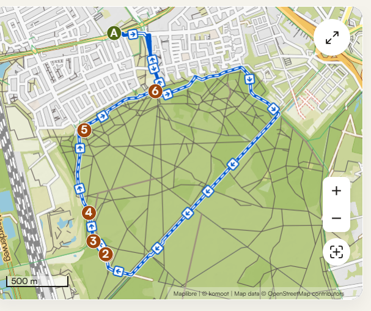
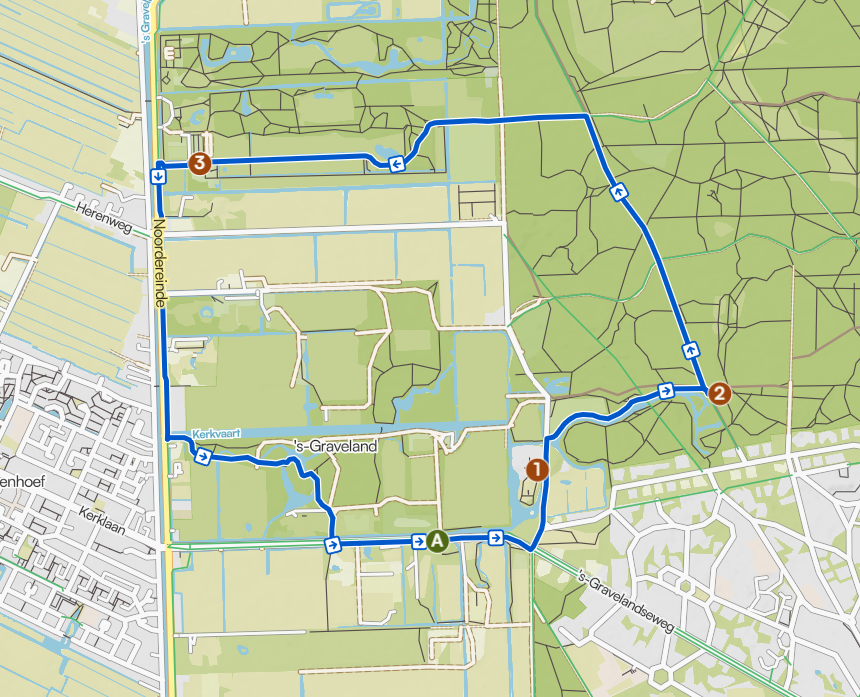
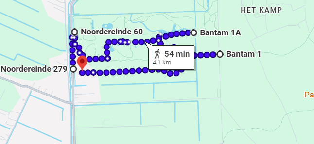
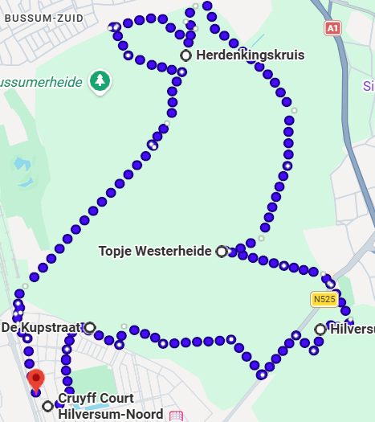

Bussummerheide

Route Overview
Discover a running route through the natural surroundings of Bussum and Hilversum.
Enjoy the peaceful scenery and explore the local paths.
View Full RouteSculpture Garden de Zanderij Route

Route Overview
Enjoy a running route surrounded by green spaces and natural scenery.
Explore the area and discover a different running environment.
View Full RouteSpanderswoud Route

Route Overview
Run along woodland paths surrounded by trees and greenery.
Experience a peaceful route through nature.
View Full RouteBussummerheide and Westerheide Route

Route Overview
Follow a winding path through the forest and enjoy the surrounding nature.
Discover another running route around Bussum and Hilversum.
View Full Route